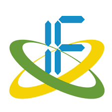

SINTAKS: STUDY HUB | Survey Mahasiswa Teknik Informatika
Survey kebutuhan belajar untuk kegiatan SINTAKS: STUDY HUB, ruang pembelajaran kolaboratif bagi mahasiswa Teknik Informatika.
Dialihkan dalam 5 detik
Tujuan: docs.google.com
Langsung ke tujuan
HMIFTeknik Informatika UM SukabumiSurvey kebutuhan belajar untuk kegiatan SINTAKS: STUDY HUB, ruang pembelajaran kolaboratif bagi mahasiswa Teknik Informatika.
Dialihkan dalam 5 detik
Tujuan: docs.google.com
Langsung ke tujuan